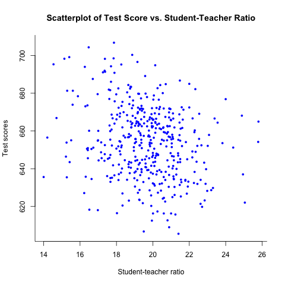
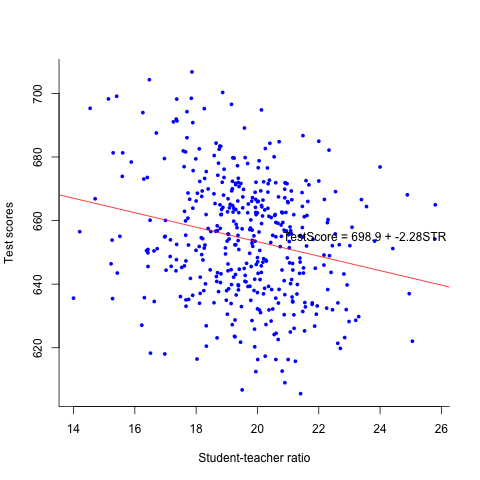

Replication of Examples in Chapter 4
Table of Contents
1 Introduction
This document is to show how to estimate a simple regression model and perform linear hypothesis testing. The application concerns the test scores of the California school districts. We will use R to estimate the simple regression model with the data set in Chapter 4.
Before running all R codes, we may first load the package AER for
loading several particular packages of regression.
library(AER)
2 Reading the data and basic summary statistics
Let's first read the data into R and show some basic statistics.
2.1 Read the data file
The textbook comes with two files for the California test score data
set, caschool.xlsx and caschool.dta, the former of which is an
Excel file and the latter is a Stata file. We need to read either one
of these two files into R so that we can use the data set.
R has several built-in functions that can read an ASCII data file,
which can have such an extension as .txt, .csv, dat, to name a
few. However, these built-in functions cannot handle an Excel file or
a Stata file. So, in order to read caschool.xlsx or caschool.dta
in to R, we need additional packages.
To read a State file with an extension of .dta, we use the function,
read.dta, in the library of foreign.
library(foreign) classdata <- read.dta("./data/caschool.dta")
classdata is a dataframe object in R. If you want to check whether
your reading is correct, you can type head(classdata), which, by
default, displays the first six observations of all variables in the
data frame object.
head(classdata[c("observat", "district", "testscr", "str")])
observat district testscr str 1 1 Sunol Glen Unified 690.80 17.88991 2 2 Manzanita Elementary 661.20 21.52466 3 3 Thermalito Union Elementary 643.60 18.69723 4 4 Golden Feather Union Elementary 647.70 17.35714 5 5 Palermo Union Elementary 640.85 18.67133 6 6 Burrel Union Elementary 605.55 21.40625
2.2 Summary
Upon reading the data, we often use summary() to see some basic
statistics. Here we are not going to show summary statistics of all
variables in the data set for the purpose of saving space, but only to
select several variables of interest in Chapters 4, including
test scores, testscr, student-teacher ratio, str.
df <- classdata[c("testscr", "str")] summary(df)
testscr str Min. :605.5 Min. :14.00 1st Qu.:640.0 1st Qu.:18.58 Median :654.5 Median :19.72 Mean :654.2 Mean :19.64 3rd Qu.:666.7 3rd Qu.:20.87 Max. :706.8 Max. :25.80
Formally, we can create a table showing important summary statistics, like the following table (Table 4.1 in the book).1
# Replicate the summary statistics in Table 4.1 summary4.1 <- function(df){ ave <- sapply(df, mean) std <- sapply(df, sd) perctile <- sapply(df, function(x) quantile(x, probs=c(0.1, 0.25, 0.4, 0.5, 0.6, 0.75, 0.9))) return(rbind(ave, std, perctile)) } library(xtable) sumtab <- xtable(t(summary4.1(df)))
In the above code, I defined a function called summary4.1. In R, we
use function() to define a custom function. In this case, the
function summary4.1 takes one argument df. The code within the
function is enclosed with the curly braces, { }, and what the
function yields is controlled by return() in the last line.
Within the function summary4.1, I use a special function in R,
sapply(). It takes each component in a list object, which is df in
this case, and impose a function on this component, and return a
simplified object. Check the help information for apply(),
lapply(), sapply(), mapply(), and tapply().
Finally, the function xtable() writes the matrix that contains the
summary statistics into a table in either a LaTeX or an HTML file.
print(sumtab, type = "latex")
| ave | std | 10% | 25% | 40% | 50% | 60% | 75% | 90% | |
|---|---|---|---|---|---|---|---|---|---|
| testscr | 654.16 | 19.05 | 630.40 | 640.05 | 649.07 | 654.45 | 659.40 | 666.66 | 678.86 |
| str | 19.64 | 1.89 | 17.35 | 18.58 | 19.27 | 19.72 | 20.08 | 20.87 | 21.87 |
2.3 Create a scatterplot using plot()
It is always a good practice to make a scatterplot between an
independent variable and a dependent variable before setting up a
regression model. Let's draw a scatterplot of student-teacher ratios
and test scores. plot is the most basic function in R to draw
figures. Here I use it to draw the scatterplot as follows.
plot(df$str, df$testscr, col = "blue", pch =16, cex = 0.7, bty = "l", main = "Scatterplot of Test Score vs. Student-Teacher Ratio", xlab = "Student-teacher ratio", ylab = "Test scores")

Figure 1: The scatterplot of test score vs student-teacher raio
We can compute the correlation coefficient
between the two variables, using the function cor. Typing the
command cor(df$str), df$testscr} yield the value of
-0.23.
3 The OLS estimation
3.1 Set up the linear regression model
We establish the following linear regression model for the relationship between test scores and class sizes
\begin{equation} \label{eq:testscr-str-1} TestScore_i = \beta_0 + \beta_1 STR_i + u_i \end{equation}3.2 Estimate in R
The OLS estimation can be implemented in R with the function lm. The
most important argument in this function is the model to be estimated,
which is called a formula object in R. A formula is defined using
the format y ~ x1 + x2, in which the symbol of ~ links the
left-hand side variable, y, and the right-hand side variables, x1,
x2. We can add more independent variables in the right-hand side with
each being appended to the formula by the symbol of +. The constant
term is by default included in the model. After estimation, we use
summary to see the results.
mod1 <- lm(testscr ~ str, data = df)
summary(mod1)
Call:
lm(formula = testscr ~ str, data = df)
Residuals:
Min 1Q Median 3Q Max
-47.727 -14.251 0.483 12.822 48.540
Coefficients:
Estimate Std. Error t value Pr(>|t|)
(Intercept) 698.9330 9.4675 73.825 < 2e-16 ***
str -2.2798 0.4798 -4.751 2.78e-06 ***
---
Signif. codes: 0 ‘***’ 0.001 ‘**’ 0.01 ‘*’ 0.05 ‘.’ 0.1 ‘ ’ 1
Residual standard error: 18.58 on 418 degrees of freedom
Multiple R-squared: 0.05124, Adjusted R-squared: 0.04897
F-statistic: 22.58 on 1 and 418 DF, p-value: 2.783e-06
For now, we just pay attention to the estimates of the two
coefficients, which is 698.93 for the
intercept, β0, and -2.28 for the slope.
\[\widehat{TestScore} = 698.93 - 2.28 \times STR\]
3.3 Plot the sample regression line
The sample regression line can be added to the scatterplot by using
the function abline. And an annotation can be added by using the
function text
plot(df$str, df$testscr, col = "blue", pch =16, cex = 0.7, bty = "l", xlab = "Student-teacher ratio", ylab = "Test scores") abline(coef(mod1)[1], coef(mod1)[2], col="red") text(23.5, 655, "TestScore = 698.9 - 2.28 STR", cex.lab = 0.9, font.lab = 3)

Figure 2: The estimated regression line for the California data
Footnotes:
To create such a table, I use the function xtable in the
package of xtable, which generates a LaTex table. Also, I modified
the format of the LaTex table using the LaTex package
booktabs. LaTex is a typsetting system, like Microsfot Word, that is
capable of creating professional looking-like documents. Though LaTex
is not required for this course, learning it would be a great benefit
for your future career development, especially in academia